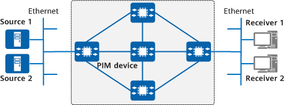

Multicast protocols are required to implement data forwarding on a multicast network. PIM is the most widely used intra-domain multicast protocol. PIM-DM is one of the implementation modes of PIM.
PIM-DM mainly uses the flooding-prune mechanism to implement multicast data forwarding. Specifically, PIM-DM floods multicast data to all network segments and then prunes the network segments with no multicast group members. Through periodic flooding-prune operations, a unidirectional loop-free SPT that connects a multicast source and multicast group members is established, maintained, and used to forward multicast data. A large number of Prune messages are generated on a network with sparsely distributed group members, and the flooding-prune period is lengthy on a large-scale network. Therefore, PIM-DM applies to small-scale networks with densely distributed multicast group members.

Neighbor Discovery: Each PIM device in a PIM-DM domain periodically sends Hello messages to all other PIM devices to discover PIM neighbors and maintain PIM neighbor relationships. By default, a PIM device permits other PIM control messages or multicast packets received from a neighbor, regardless of whether the PIM device has received Hello messages from the neighbor before. However, if the neighbor check function is configured on a PIM device, the PIM device permits other PIM control messages or multicast packets received from a neighbor only after the PIM device receives Hello messages from the neighbor.
Flooding: PIM-DM assumes that each subnet on the network has at least one multicast group member. Therefore, multicast data is flooded to all nodes on the network, and all PIM devices on the network can receive the multicast data.
Prune: After flooding multicast data, PIM-DM prunes network segments that have no multicast data receiver, retaining only the network segments that have multicast data receivers. In this way, only the PIM devices that require multicast data can receive the data.
State-refresh: An upstream PIM device maintains a prune timer for each downstream device that no longer needs multicast data. When the prune timer expires, the upstream PIM device resumes forwarding data to the downstream PIM device although it does not need the data, which wastes network resources. State-refresh enables the first-hop device, which is nearest to the multicast source, to periodically send State-Refresh messages to refresh the prune timers for downstream devices. In this way, the first-hop device retains the pruned state for the downstream devices that do not require multicast data.
Graft: When a multicast group member requests multicast data from a pruned node, PIM-DM uses the graft mechanism to resume forwarding data, which reduces the time required for the node to restore to the forwarding state.
Assert: If multiple PIM devices exist on a network segment, the same multicast packets may be sent to the network segment repeatedly. The Assert mechanism can be used to select only one multicast data forwarder for a network segment, preventing redundant multicast data forwarding.
Hello messages are used to discover neighbors, negotiate protocol parameters, and maintain neighbor relationships.
Discovering PIM neighbors
All PIM devices on the same network segment must receive multicast packets with the destination address 224.0.0.13. Directly connected multicast devices can then learn neighbor information from received Hello messages.
Negotiating protocol parameters
Hello messages carry multiple protocol parameters, which are negotiated between neighbors and are described as follows:
DR_Priority: priority used by each device interface to elect a DR. The higher the priority, the higher the probability that the interface will be elected as the DR.
Holdtime: timeout period during which a neighbor remains in the reachable state.
LAN_Delay: delay for transmitting a Prune message on the shared network segment.
Override-Interval: interval carried in a Hello message for overriding a Prune action.
Maintaining neighbor relationships
PIM devices periodically exchange Hello messages. If a PIM device does not receive a new Hello message from its PIM neighbor within the holdtime, the device considers the neighbor unreachable and deletes it from the neighbor list.
Changes of PIM neighbors will lead to multicast topology changes on the network. If an upstream or a downstream neighbor along an MDT becomes unreachable, multicast routes re-converge, and the MDT is updated.
In Figure 2, the multicast source sends data packets to DeviceA, which then sends them to all its neighbors. In this case, DeviceB and DeviceC also forward data packets to each other. PIM-DM, however, uses the RPF mechanism to ensure that data is accepted from only one direction. (For details about the RPF check, see RPF Check.) Finally, data is flooded to DeviceB with receivers, and DeviceC without receivers. This process is called flooding.
As shown in Figure 3, DeviceC does not have receivers. Therefore, it does not need multicast data. In this case, it sends a Prune message upstream to DeviceA, instructing DeviceA to stop forwarding data to the downstream network segment. After receiving the Prune message, DeviceA stops forwarding data through the corresponding downstream interface. This process is called prune.
Because DeviceA still has another downstream interface, which is in the forwarding state, DeviceA keeps forwarding multicast data to DeviceB. The subsequent multicast data is forwarded only to DeviceB. In this manner, a unidirectional loop-free SPT connecting the multicast source and the receiver is established.
In Figure 4, when the network segment where DeviceC resides enters the pruned state, DeviceA starts a prune timer for the interface connected to DeviceC. When the prune timer expires, DeviceA resumes forwarding data to DeviceC although it does not need the data, which wastes network resources.
PIM-DM uses the State-Refresh feature to solve this problem. The first-hop device (DeviceA), which is nearest to the multicast source, periodically floods State-Refresh messages on the entire network to refresh the prune timers of all downstream devices. In this way, the downstream devices that do not require multicast data remain in the pruned state.
The state-refresh process is as follows:
In Figure 5, when DeviceC in the pruned state receives an IGMP Report message from HostB, PIM-DM uses the graft function to implement fast data forwarding, without waiting a flooding-prune period. The graft function works as follows:
DeviceC sends a Graft message upstream to require DeviceA to restore the forwarding status of the corresponding outbound interface. After receiving the Graft message, DeviceA restores the forwarding status of the downstream interface connected to DeviceC and forwards multicast data packets to DeviceC through this downstream interface.
Either of the following conditions indicates that another multicast forwarder exists on the network segment:
A multicast packet fails the RPF check.
The interface that receives a multicast packet is a downstream interface corresponding to the (S, G) entry on the local device.
In this case, the device performs the Assert mechanism. The device sends an Assert message through the downstream interface. The downstream interface also receives an Assert message from a different multicast forwarder on the network segment. In the packet in which an Assert message is encapsulated, the destination address is 224.0.0.13, the source address is the downstream interface's address, and the TTL value is 1. The Assert message carries the route cost from the PIM device to the multicast source or RP, the priority of the used unicast routing protocol, and the address of the multicast group (G).
The device with the highest unicast routing priority wins.
If devices have the same unicast routing priority, the one with the smallest route cost to the multicast source or RP wins.
If all the preceding conditions are the same, the device with the highest downstream interface IP address wins.
The device performs the following operations based on the Assert election result:
If the device wins the election, its downstream interface remains in the forwarding state and is responsible for forwarding multicast packets corresponding to the (S, G) entry on the network segment. This downstream interface is called an Assert winner.
If the device fails in the election, its downstream interface is prohibited from forwarding multicast packets and is deleted from the downstream interface list of the (S, G) entry. This downstream interface is called an Assert loser.
After Assert election is complete, only one upstream device has a downstream interface that serves the network segment, and the downstream interface transmits only one copy of each multicast packet. The Assert winner then periodically sends Assert messages to maintain its status as the Assert winner. If the Assert loser does not receive any Assert message from the Assert winner within the timer maintained by the Assert loser, the loser restores the forwarding status of its downstream interface.
In Figure 6, DeviceB and DeviceC can receive multicast packets from the multicast source, and the multicast packets pass the RPF check. Therefore, an (S, G) entry is created on both DeviceB and DeviceC. Because the downstream interfaces of DeviceB and DeviceC are connected to the same network segment, DeviceB and DeviceC can both send multicast data to the network segment. In this case, the Assert mechanism ensures that only one multicast data forwarder serves a network segment. The Assert process is as follows:
DeviceB receives a multicast packet from DeviceC through a downstream interface. The packet fails the RPF check and is discarded. In addition, DeviceB sends an Assert message to the network segment.
DeviceC compares its routing information with that carried in the received Assert message. DeviceC fails the Assert election because its route cost to the source is higher. As a result, the downstream interface of DeviceC is prohibited from forwarding multicast packets and deleted from the downstream interface list of the (S, G) entry.
DeviceC receives a multicast packet of the network segment from DeviceB. However, the packet fails the RPF check and is discarded. At this point, the Assert process ends.